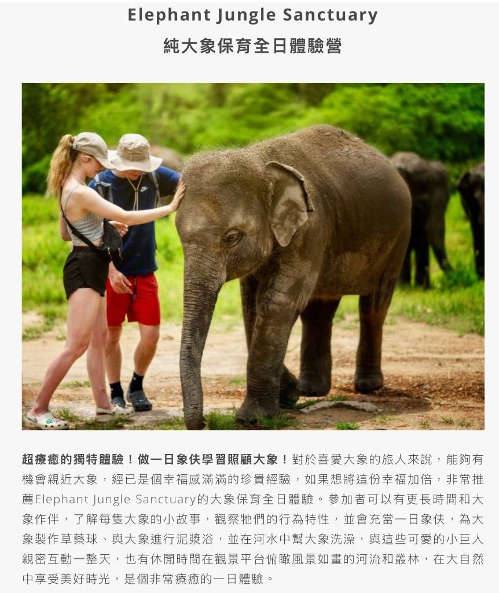

出發前備忘
一定要補上的項目
- 班機：回程（清邁→桃園 BR258 等）已摘在下方「每日筆記」左欄底；去程（台灣→清邁）仍請補與核對訂位／行李。
- 各晚住宿飯店名稱、地址、入住／退房：第 1–4 晚已訂 莫客房飯店（Mo Rooms Hotel，訂單 1721798330；見第 1 天筆記與內文照片）。第 5 晚起改住 MAYA／寧曼一帶，飯店名與訂位：（後面再補上資料）。
- 你備註的整段日期 11.24 ～ 21.1：目前截圖上的有細節的行程是 11/24～12/1 共 8 天。若 12/2 之後到 1/1 還要續住或轉地點，另開段落（後面再補上資料）。
行程總表
點「閱讀筆記」開啟該日 Markdown 渲染頁（需從本機伺服器或上線網域開啟，勿只雙擊 file://）。
| 天數 | 日期 | 主題 | 一則筆記 |
|---|---|---|---|
| 第 1 天 | 11/24 | 水燈（Ping River／塔佩門） | 閱讀筆記 |
| 第 2 天 | 11/25 | 古城泰服（預約）｜13:00–15:00 MAYA 接駁天燈會場 | 閱讀筆記 |
| 第 3 天 | 11/26 | 遊行、夜間動物園、古城＋咖啡 | 閱讀筆記 |
| 第 4 天 | 11/27 | 清萊一日（白廟、藍廟、黑屋） | 閱讀筆記 |
| 第 5 天 | 11/28 | 早：古城退房 → 住 MAYA 附近；下：廚藝教室 | 閱讀筆記 |
| 第 6 天 | 11/29 | Elephant Jungle Sanctuary 大象全日遊（市區接駁） | 閱讀筆記 |
| 第 7 天 | 11/30 | 上午高空繩索半日、下午＋晚上週末市集 | 閱讀筆記 |
| 第 8 天 | 12/1 | 早餐＋採買、回台 | 閱讀筆記 |
12/2 ～ 1/1 若另有規劃：（後面再補上資料）。
前幾天住莫客房飯店（古城塔佩一帶）；第 5 天上午換宿起至離境前，改住MAYA 購物中心附近。各日從哪裡出發、有無換宿、大約路上時間，已寫在當天筆記的「本日住宿與移動」小節，不再另列移動一覽表。
地圖（清邁為主 ＋ 清萊一日）
若地圖縮得太小、看不出誰在誰旁邊，請先看本頁最上方插圖的 A～F 相對關係。下方地圖含清邁、清萊、以及 Elephant Jungle Sanctuary 山區營區參考點（不取代接駁集合地）。大象朋友旅館舊點已移除。
每日筆記（Markdown 檔案）
每則內文檔在 content/chiang-mai/days/*.md，要改文案或換照片路徑直接編輯該檔最方便。下方面板左欄最上＝出發（去程）飛行、最下＝回台（回程）飛行、中間為兩段住宿；右欄為 D1–D8 與讀筆記連結。寬螢幕兩欄格線，窄螢幕依上列順序直向顯示。
出發（去程）
台灣 → 清邁 CNX
配合 D1 行程 11/24 抵達清邁
航空公司、航班代號、起飛時刻、抵達、訂位代號 PNR、電子機票票號、行李等：（後面再補上資料，或一併寫在與回程同開的 EVA 憑證內）— 實際以登機前櫃台與 app為準。
第一段 · 清邁古城
D1 – D4 · 11/24 入住 ～ 11/28 上午退房
莫客房飯店 Mo Rooms Hotel
塔佩路／塔佩門一帶，方便水燈與天燈活動。Agoda 訂單 1721798330。
住宿細節與實景照在 第 1 天筆記 內文。


第二段 · 寧曼與瑪雅商圈
D5 – D8 · 11/28 午後 ～ 12/1 離境
MAYA 購物中心／寧曼一帶
第 5 天上午自古城帶行李換宿至此，其後至出國前皆以此區為下榻點。飯店名稱、訂位可寫在 第 5 天筆記 或待補欄位。
第 5 天筆記內有「本日住宿與移動」可對照大行李搬運。



回程（飛行）
長榮航空 EVA Air · BR258
清邁 CNX 11:50 起飛（12/1 一，當地）→ 桃園 TPE 16:30 抵達
飛行時間約 3:40。抵達以第二航廈 T2為憑證所載（變更以班機實況與櫃台為準）。
訂位代號 PNR FEH6IY · 票號 695-2465236847 · 旅客名依憑證（如 Chen Tsaishen 等）。狀態 OK、艙等 X、行李 2PC；有註 FQTR 等常旅客兌獎，以櫃台為準。
以上摘錄自電子機票，仍請以 官方 App／行程表 即時顯示為主。